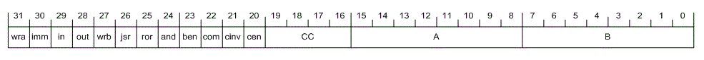

The computer is a two-address machine, meaning that each instruction includes two direct memory addresses from which to fetch the operands. This eliminates the need for a register or accumulator to provide one of the operands. A triple-port memory is needed to support this: one port for the fetched instruction and two ports for the data.
All instructions execute in one single-phase clock cycle, so there is no required sequencing logic. Aside from the 4-bit condition code, there are only 12 control signals. There is no instruction decoder, instead the instruction is wide enough to fit all 12 control signals directly, similar to a horizontally microcoded design. Many instructions are possible based on the many possible combinations of the control signals.
The datapath is 8-bits, but instructions are 32-bits. Instructions and data are both stored together in memory. There are 256 memory locations. Each location holds a 32-bit instruction. The lowest 8-bits of each location (corresponding to the B address field of the instruction) are used for data and can be read from or written to by the running program.
This is a "semi" Von Neumann architecture. Data and code are stored together in memory like a standard Von Neumann machine, but only part of the instruction can be accessed or modified by the program. Self-modified code is used to implement indexing and subroutine linkage by having the program write to this part of an instruction. This is akin to early computers such as UNIVAC-I and Princeton IAS.
Originally it was intended to implement a clone of the 12-bit Digital PDP-8 minicomputer, but the result would have been a slower, more expensive computer (needing about 280 relays, with no I/O). One aspect of this original PDP-8 idea remains in the design: like the PDP-8, the ALU supports only add and AND. Exclusive-OR and OR have to be implemented with a sequence of instructions.
It can be argued that the triple-port memory is "cheating" (meaning that early computers would not have used such a memory), but we are already cheating by using semiconductor memory, so we might as well make the most of it.
The memory, the immediate data MUX and the single-phase clock are implemented in a microcontroller (in silicon). The CPU, including ALU, PC, carry-flag, input port, output port and condition logic is implemented in 83 DPDT relays.

The immediate data MUX should also be implemented in relays, but it was added later as an afterthought. Immediate mode is not strictly needed since you can always store data in an addressed memory location. On the other hand, immediate mode saves memory and is convenient.
Another subtle bit of cheating is the ability to write back either to the A address or the B address. There should be a MUX to select between the two addresses, but it's implemented in the microcontroller as part of the memory.
There is an 8-bit Program Counter which points to the instruction in memory to execute. The program counter is normally incremented after each instruction, but it can be replaced with the B-field of the instruction for jumps.
The next instruction address (PC + 1) can be written to memory to record a subroutine return point.The program counter has its own incrementer which requires 7 relays. This is cheaper and faster than the alternative of having the ALU increment the PC. For the ALU to do it would require a 4 relay MUX to feed the PC through the ALU, plus at least 5 more relays to MUX the ALU control signals and otherwise deal with the non-single cycle / per instruction operation. An ALU operation could not have been done in the same cycle that the PC is being incremented, so performance would have been halved.
The carry-out bit of the ALU (possibly modified by the rotator) is saved into the carry flag after every executed instruction. In other words, all instructions modify the carry flag.
The memory should be thought-of as having three ports: one for the instruction and two for data. When an instruction is read, the data from the addresses given by the A and B fields of the instructions are also read. The instruction's results can optionally be written back to either the address given in the A field or the B field.
All instructions have this format:
Key:
All instructions execute in a single cycle, and always follow this logical sequence: